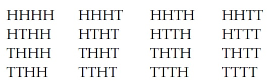
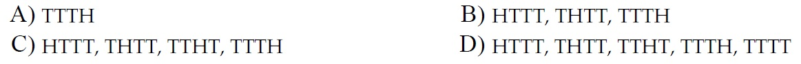
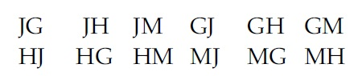
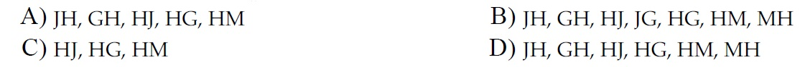
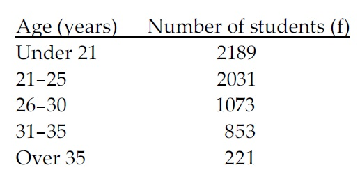
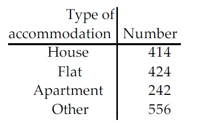
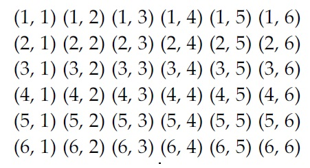
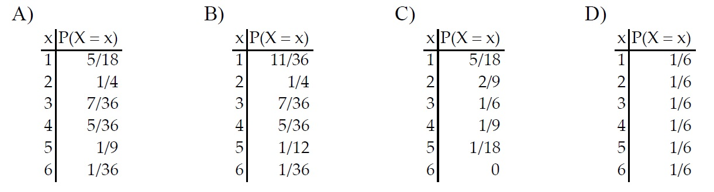
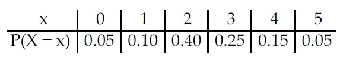
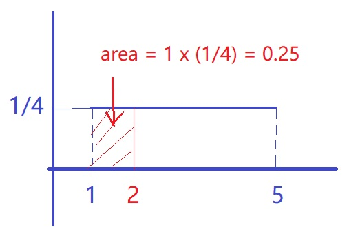

|
Please show your work before checking the answer and explanations. The exam questions will be similar to these exercise problems.
Problem 1. When a quarter is tossed four times, 16 outcomes are possible.

Here, for example, HTTH represents the outcome that the first toss is heads, the next two tosses
are tails, and the fourth toss is heads. List the outcomes that comprise the following event.
Define event E = event exactly three tails are tossed.

View Answer
Ans : C
Explanation: This based on the definition of an event: all outcomes in the sample space that meet ths condition of having EAXACTLY 3 tails.
Problem 2. In a competition, two people will be selected from four finalists to receive the first and second
prizes. The prize winners will be selected by drawing names from a hat. The names of the four
finalists are Jim, George, Helen, and Maggie. The possible outcomes can be represented as follows.

Here, for example, JG represents the outcome that Jim receives the first prize and George receives
the second prize. List the outcomes that comprise the following event.
A = event that Helen gets a prize

View Answer
Ans : D
Explanation: Caution - A and C are part of D. So the correct choice is D.
Problem 3. The age distribution of students at a community college is given below.

A student from the community college is selected at random. The event A is defined as follows.
A = event the student is between 26 and 35 inclusive.
Determine the number of outcomes that comprise the event (not A).
A) 4441
B) 5294
C) 4220
D) 1926
View Answer
Ans : A
Explanation:2189 + 2031 + 221 = 4441.
Problem 4. A survey resulted in the sample data in the given table. If one of the survey respondents is
randomly selected, find the probability of getting someone who lives in a flat.

A) 424
B) 0.002
C) 0.393
D) 0.259
View Answer
Ans : D
Explanation: 424/(424+414+242+556) = 0.259 (approx.)
Problem 5. Suppose a coin is tossed four times. Let X denote the total number of tails obtained in the four
tosses. What are the possible values of the random variable X?
A) 1, 2, 3
B) 0, 1, 2, 3, 4
C) HHHH, HHHT, HHTH, HHTT, HTHH, HTHT, HTTH, HTTT, THHH, THHT, THTH,
THTT, TTHH, TTHT, TTTH, TTTT
D) 1, 2, 3, 4
View Answer
Ans : B
Explanation: The possible values must be between 0 (all heads) and 4 (a T is obsversed every time). Note that C is not correct since it lists all possible outcomes - sample space.
Problem 6. For a randomly selected student in a particular high school, let Y denote the number of living
grandparents of the student. Use random-variable notation to represent the event that the
student obtained has exactly three living grandparents.
A) {Y >= 3}
B) P{Y = 3}
C) {Y < 3}
D) {Y = 3}
View Answer
Ans : D
Explanation: Note that B is a probablity. It is not the correct choice.
Problem 7. When two balanced dice are rolled, 36 equally likely outcomes are possible as shown below.

Let X denote the smaller of the two numbers. If both dice come up the same number, then X
equals that common value. Find the probability distribution of X. Leave your probabilities in
fraction form.

View Answer
Ans : B
Explanation: This problem seems to be challenging. In fact, you can eliminate incorrect answers to find the correct choice. For example, we can find P(X = 1) = 11/36 by looking at the outcomes in the first row and first column, there are 11 outcomes containing "1". Once you have P(X = 1), you can see that B is the only choice.
Problem 8. A statistics professor has office hours from 9:00 am to 10:00 am each day. The number of students 13)
waiting to see the professor is a random variable, X, with the distribution shown in the table.

The professor gives each student 10 minutes. Determine the probability that a student arriving just
after 9:00 am will have to wait no longer than 30 minutes to see the professor.
A) 0.95
B) 0.25
C) 0.40
D) 0.80
View Answer
Ans : D
Explanation: Note that since each uses 10 minutes, a student "will have to wait no longer than 30 minutes"
means that there are no more than 3 students who are waiting to see the professor. Threre, we want to find P(X<= 3) =
0.05 + 0.1 + 0.4 + 0.25 = 0.8.
Problem 9. The time taken to answer an exam question for a randomly chosen student has a uniform probability distribution from 1 minute to 5 minutes. What is the probability that the time to answer is no more than 2 minutes?
A. 0.20
B. 0.25
C. 0.40
D. 0.75
View Answer
Ans : B
Explanation: The answer is explained in the following figure.

Problem 10. The time taken to deliver a pizza has a uniform probability distribution from 20 minutes to 60 minutes. What is the probability that the time to deliver a pizza is exactly 25 minutes?
A. 0.125
B. 0.300
C. 0.700
D. 0
View Answer
Ans : D
Explanation: For a continuous distribution, the probability of selecting any arbitrary number is ALWAYS ZERO.
|